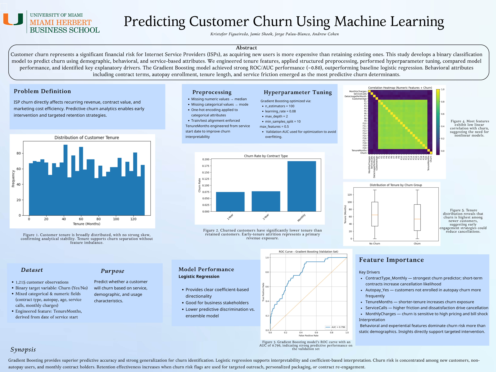

Project methods.
Architecture, modeling decisions, validation, and business use across the projects in my portfolio.
MLB Predictor
A transparent baseball probability and paper-trading system built around stable inputs, calibration, reproducible odds handling, and exportable decision logs.
Model architecture
- Elo ratings represent evolving team strength; Poisson scoring estimates run distributions; a roughly 19-feature logistic model adds matchup-level context.
- The ensemble converts model probability into edge by comparing it with market-implied probability. Kelly sizing is constrained by bankroll and user-selected risk settings.
- Online gradient descent supports incremental updates; batch logistic training, train/test evaluation, and five-fold cross-validation provide a separate quality check.
- Calibration is evaluated with Brier score, expected calibration error, sharpness, and ROC-AUC, not accuracy alone. Closing-line value and downloadable paper logs support forward monitoring.
Quant Desk
A research and operations layer for factor signals, risk-aware allocation, walk-forward evaluation, and paper-only portfolio monitoring.
Signal and portfolio workflow
- Cross-sectional features include 12-1 momentum, 200-day trend, inverse-volatility quality, RSI value sanity checks, and standardized composite scores.
- Portfolio construction uses inverse-volatility weighting, concentration caps, and a market-regime filter to translate scores into controlled exposures.
- Monthly walk-forward evaluation prevents future information from entering historical decisions. Information coefficient, turnover-aware costs, signal decay, and block-bootstrap Monte Carlo examine robustness.
- A machine-learning branch compares regularized logistic regression with histogram gradient boosting, using standardized inputs, ROC-AUC, permutation importance, and purged walk-forward splits with a one-month embargo.
HireSense
A retrieval-augmented candidate analysis prototype designed to connect résumé evidence to role requirements and structured interviews.
Pipeline
- Résumés are parsed and chunked into evidence units; embeddings place candidate evidence and role requirements in a shared vector space.
- Cosine similarity retrieves the most relevant evidence before language-model scoring, reducing the need to rely on an ungrounded full-document prompt.
- The interface surfaces explainable rankings and generates structured interview questions tied to retrieved evidence.
- Production use would require bias testing, consent, retention controls, human review, and documented adverse-impact monitoring. The prototype is decision support, not an autonomous hiring system.
Tractor Inventory Planning
A client-sponsored capstone focused on SKU-level safety-stock policy, service targets, and inventory return.
Decision framework
- ABC classification separates high-value, high-attention items from lower-value tail inventory so control effort matches economic exposure.
- Safety stock combines demand variability, replenishment lead time, and target service levels. Reorder points add expected lead-time demand to the buffer.
- Forecast quality is monitored with actual-versus-forecast error and MAPE, while bootstrap or Monte Carlo scenarios stress demand and lead-time uncertainty.
- Kristofor led a seven-person team developing the strategy for a 27-product portfolio, with 85-95% service-level targets and a reusable process map.
Surfside Surfboards
A MySQL operating model derived from original business rules for fixed board configurations, reusable components, customers, orders, reviews, and management reporting.
Data architecture
- The schema separates customers, boards, component definitions, fixed board/component relationships, orders, line items, reviews, and historical prices into eight normalized tables.
- Junction tables resolve many-to-many relationships; primary keys, foreign keys, uniqueness rules, checks, and timestamps protect referential and business integrity.
- Historical price snapshots keep order economics reproducible even when catalog prices change. Views simplify management reporting without duplicating source records.
- Quarterly SQL queries turn the operating model into customer, product, sales, and review insights. Docker setup makes the database reproducible.
Coffee Operations Modeling
A completed PySpark project analyzing approximately 1.96 million transaction records through two operational questions: wait-time prediction and rewards-membership classification.
Comparative modeling
- The wait-time track compares linear regression with decision-tree regression using held-out error and fit metrics; the nonlinear tree is selected when it better captures interactions in operational data.
- The membership track compares logistic regression with random forest classification. Logistic regression is selected for its balance of ROC-AUC performance and interpretability.
- PySpark ML pipelines support large-scale feature transformation and evaluation. Standardization and PCA are available for dimensionality and scale control.
- The notebook preserves outputs, but the original coffee dataset is not present; the repository reports that limitation directly.
U.S. Retail Job Openings Forecast
A 2025 monthly forecast built from 108 training observations spanning 2016-2024, with seasonal diagnostics and rolling-origin model comparison.
Forecast discipline
- ADF and KPSS tests assess stationarity from complementary null hypotheses; ACF, PACF, EACF, and STL decomposition guide seasonal structure and differencing decisions.
- Candidate models include multiple SARIMA specifications, damped ETS, STL plus ARIMA, a seasonal-naïve benchmark, and a weighted ensemble.
- Rolling-origin cross-validation with a 12-month horizon compares MAE, RMSE, and MAPE under the same forward-looking task as the final forecast.
- Ljung-Box residual checks test whether remaining errors behave like white noise. The final forecast covers January through December 2025.
Internet Service Churn
A team classification project focused on disciplined preprocessing, gradient boosting, model interpretation, and retention decision support.
Implementation
- Feature engineering converts tenure into months, followed by median and mode imputation for numeric and categorical fields.
- One-hot encoding and train/test column alignment prevent inconsistent feature matrices. A stratified holdout preserves the churn rate in validation.
- Gradient boosting captures nonlinear customer-risk patterns; the analysis pairs ROC-AUC with feature importance, ROC curves, and decision-threshold sensitivity.
- The final poster identifies monthly contracts, autopay enrollment, tenure, service calls, and monthly charges as the most useful drivers for retention strategy.

IT Asset Lifecycle & Risk
A City National Bank of Florida MSBA capstone contribution focused on lifecycle risk, legacy dependencies, KPI governance, and executive Power BI reporting.
Contribution and delivery
- Contributed to a cross-functional KPI audit across approximately 4,200 IT hardware assets in ServiceNow.
- Modeled lifecycle and end-of-life fields to identify at-risk units and surface legacy dependencies within internal systems.
- Supported a unified performance framework that standardized risk metrics and aligned reporting with strategic technology priorities.
- Built executive-ready Power BI reporting across four interactive pages with 19 custom DAX measures. The solution used DAX and CSS to meet a no-JavaScript security constraint.